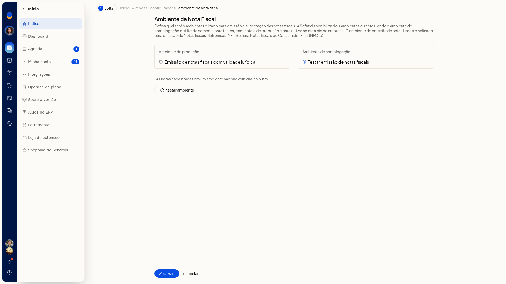
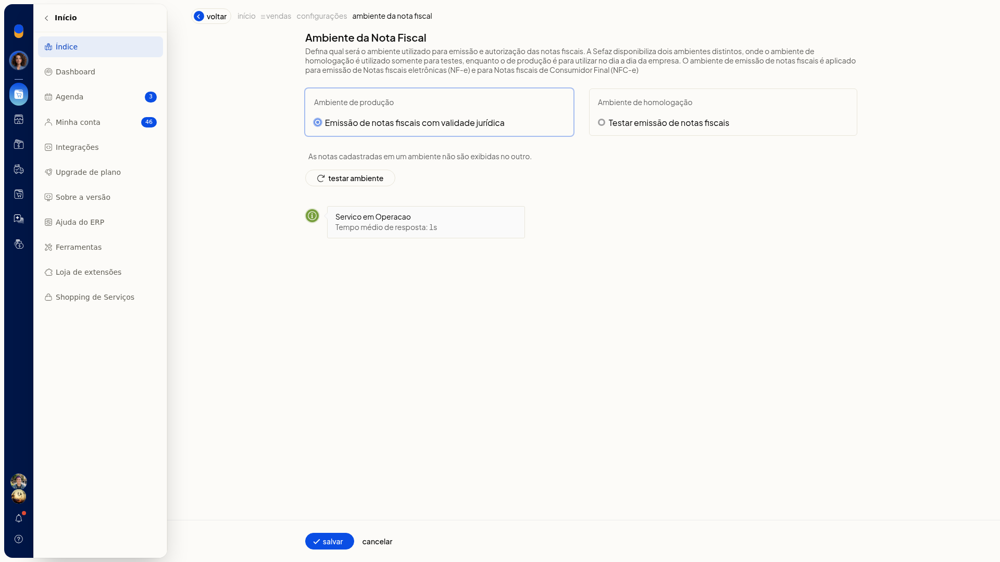

Ambiente das notas fiscais: homologação e produção
O ambiente das notas fiscais define qual ambiente da Sefaz o ERP da Olist usa para emitir e autorizar NF-e e NFC-e. Em homologação, você testa a emissão. Em produção, as notas do dia a dia saem com validade jurídica.
Na mesma tela, você pode testar se o serviço está em operação antes de gravar a escolha. O caminho é Configurações > Configurações ERP > Notas Fiscais > Ambiente das notas fiscais.
Importante
- O ambiente de homologação serve somente para testes. O ambiente de produção é para o dia a dia e descreve emissão de notas fiscais com validade jurídica.
- A escolha vale para Notas fiscais eletrônicas (NF-e) e Notas fiscais de Consumidor Final (NFC-e).
- As notas cadastradas em um ambiente não são exibidas no outro.
- Marcar um ambiente não grava a escolha. Sem Salvar, a seleção é descartada e permanece o ambiente já gravado.
Instruções
-
Acesse Configurações > Configurações ERP.
-
Abra a aba Notas Fiscais.
-
Clique em Ambiente das notas fiscais. O item da lista exibe o selo do ambiente já gravado.

-
Selecione Ambiente de produção — Emissão de notas fiscais com validade jurídica ou Ambiente de homologação — Testar emissão de notas fiscais.


-
Para conferir o serviço antes de gravar, clique em Testar ambiente. A tela mostra o status do serviço e o tempo médio de resposta.

-
Clique em Salvar para gravar o ambiente escolhido. A emissão e a autorização de NF-e e NFC-e passam a usar esse ambiente. Para descartar a seleção, saia por Cancelar sem Salvar.
Resultado
Com a homologação gravada, o item Ambiente das notas fiscais na aba Notas Fiscais mostra o selo Ambiente de testes.